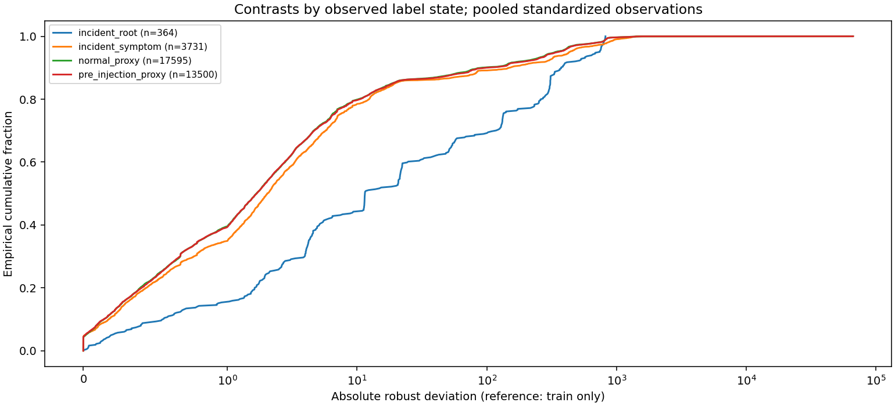
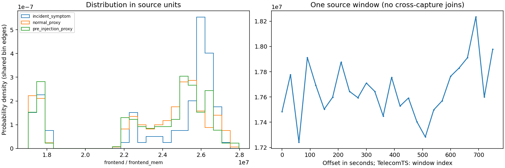
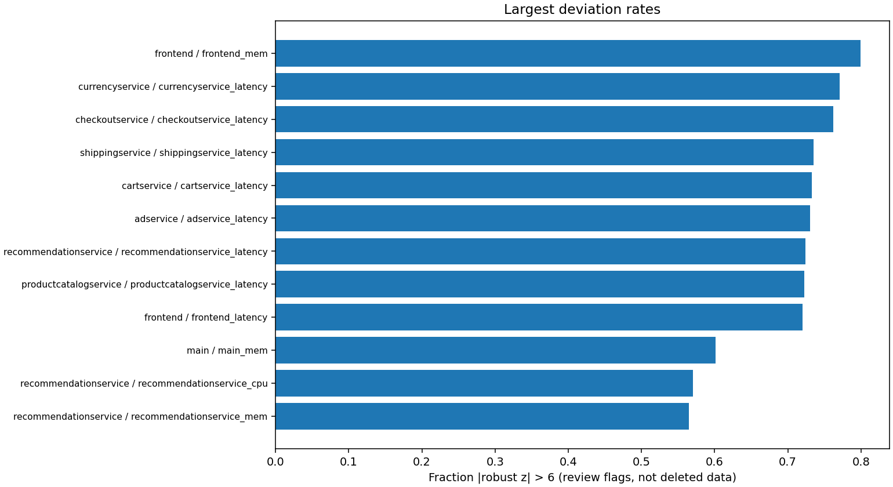

Scope: all. Reference chỉ fit train. Outlier ≠ lỗi dữ liệu. Chưa nhãn ≠ bình thường. Không xoá hoặc sửa nhãn tự động.
Phân bố / missing / cadence · Hàng chờ BA/SME review



{
"dataset": "rcaeval",
"scope": "all",
"profiles": 45,
"observed_label_counts": {
"normal_proxy": 391,
"pre_injection_proxy": 300,
"incident": 91
},
"review_candidates": 94,
"nonfinite": 0,
"constant_series": 0,
"automatic_deletion": false,
"automatic_relabelling": false,
"reference": "train only; fallback explicitly marked",
"limitations": [
"Public injected faults are not sparse human labels",
"Pre-injection is a healthy proxy, not verified normal",
"Robust outlier flag may be the fault signal; never automatically remove",
"Flat lines can be legitimate constants or sensor problems",
"No noise ground truth; no inferred noise rate",
"Review queue capped at three flags per series",
"TelecomTS profiles window means; raw missing count also retained",
"Pooled observations are correlated; no independent-sample significance claim"
]
}